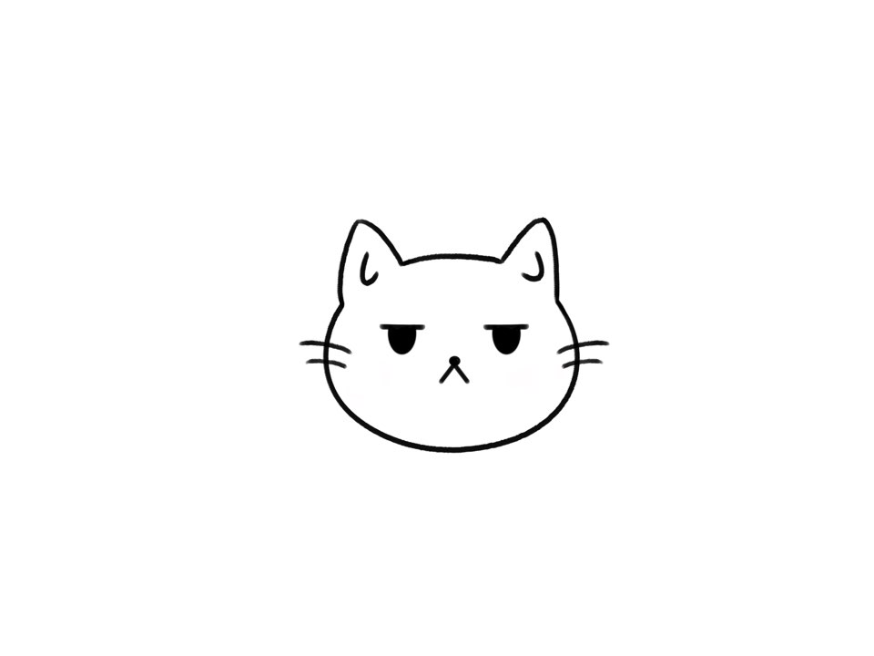

- HTML
- CSS
- JavaScript
HTML 첫 실습
진하게
밑줄긋기
h1태그는 뭐하는거지
This is heading 1
This is heading 2
This is heading 3
This is heading 4
This is heading 5
This is heading 6
h1부터 h6는 제목을 나타내는 태그
h1은 가장 중요한 제목, h6은 가장 덜 중요한 제목
줄바꿈은 감싸지 않아도 된다
단락을 구별해주는 내용이기 때문에 p는 닫아주어야 한다. 정보로써 조금 더 가치있는 형태는 단락이기 때문에 되도록 p쓰자
하지만 시각적으로는 자유도가 떨어짐. 이를 해결하기 위해 CSS를 사용할 수 있음
css를 사용해 떨어진 것 확인할 수 있음
